Region of Interest¶
Ships positions in a predefined Region or area - Region of Interest (ROI) or bounding box* gives you the ability to track all ships activity in an area you have predefined.
A Region or area is bounding box is an area defined in the map by two pairs of coordinates (minimum/maximum longitude and latitude).
In Navika application You can create a region by using the mouse by Click and drag the box.
First you click on the menu as indicated in the Fig. 130 to select the Region of Interest.
co-ordinates in the shape of rectangle or square select the region on the map.
Where ships and vessels trajectories are passed through and anchored in the region. In this region where irrespective of the ship types are populated.
The current location and track information of the ships operating within a Region of Interest or bounding box you have specified, this information can then be used to create a detailed database of movements for analysis.
You have set a timeline and Monitor ships activity.
Ship Positions in a ROI area gives you the ability to track all ships activity in a ROI, will be saved under your Navika account.
You have the option to receive Last known positional information with a refresh rate of interval.
Using this Region of Interest to keep up-to-date with the current location and trajectories information of the ship operating within a Region of Interest
The following steps to create the Region of Interest:
Click on the left menu bar to select Region of Interest
Click on the Mark area on the Map button for mark the area
Region can part of the land mass is also permitted
You can click and release the left mouse key after selecting the required area
Once you select the area, pop-up box will indicate the 4 latitude and longitude of 4 vertices of the selected area
You can type in name of the region of your choice
Click on the Add button, Region will created
The region selected is independent of date and time
You have logged in current date and time.
Region added to the menu bar
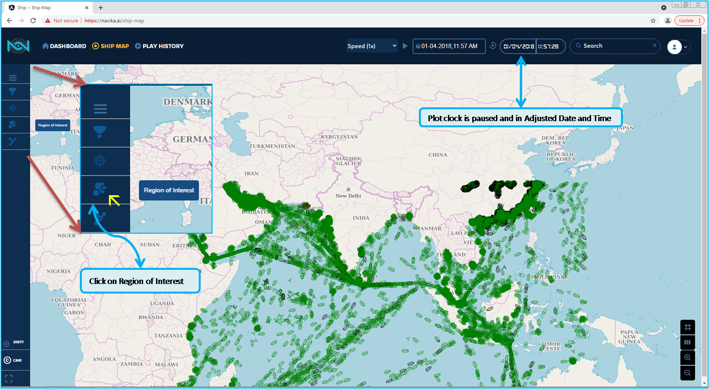Fig. 130 Region Of Interest menu to select¶
Now you can add new region of you choice, to learn follow the steps as indicated in the Fig. 131
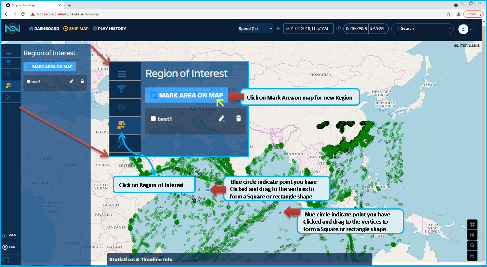Fig. 131 Add New Region¶
In the Fig. 132 indicate to Enter the Region Name of your choice. but Empty field is not accepted. Aslo you can observe that panel to enter Region name has 4 points in LAT/LONG values for the 4 vertices of the bounding box, that is the Region we have selected. This are stored in your profile, even if you logged out of the Navika application. So that you can log-in later time.
So for clarity, as indicated in the Fig. 133 we are entering the name as test2 for the region we have defined.
In the Fig. 134 indicate the confirmation message that Region is added, and Statistical and Timeline info computation is under process, it may take 20 to 40 minutes and you have click OK button. Since it will depends on the Time Series you have selected.
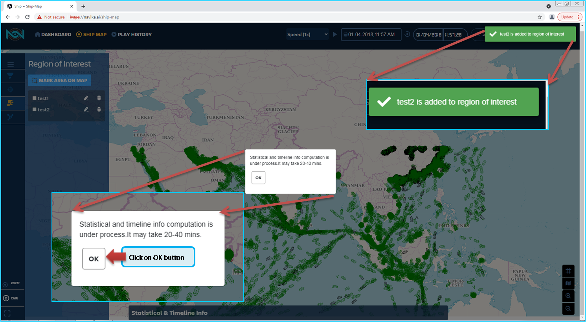Fig. 134 Statistical and Timeline Info Computation process time¶
Once the you have clicked OK, the newly added Region name will be listed in the menu with check Box. As indicated in the Fig. 135, also you can observe that the navigational bar has Adjusted Date and time with Paused clock, and as per the plot clock, ships/vessles are plotted. So this is not impacted with process computation with respect to Region of Interest.
Ther is no limit for adding the new region into your account.
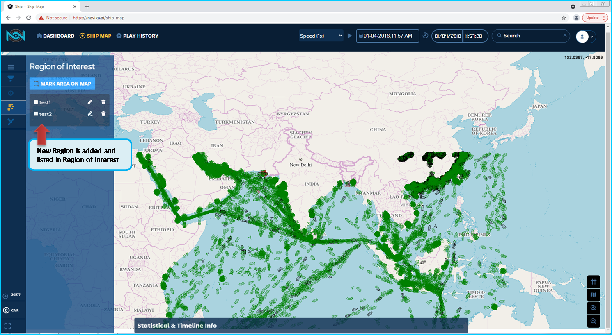Fig. 135 Region-test2-added and Listed in the Menu¶
In the following figure Fig. 136 already Region - test1 is added. So you can able to understand the functionality of Region of Interest.
In the Fig. 136 after you have added the Region, you can click on the check box for anaysis of the Region. that is statistical with Timeline Info in which you can set the timeline by sliding the Year of your requirement.
As you have opened the Region of Interest, without checking the Selected Region Box, Statistical & Timeline info are displayed and In the Navigation Bar all the fields are active until you check the box in the Selected region.
Once you have checked the box, Plot clock, Adjusted date and Time, Reset clock / sync clock to server button are hidden. except Search Field.
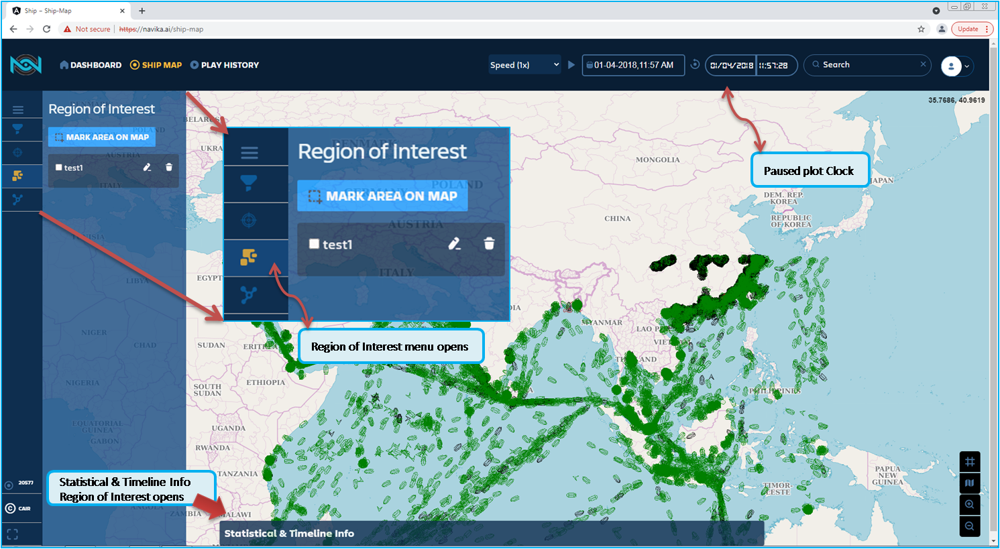Fig. 136 ROI-menu-open-with Region - Test1¶
Further to the above, the Statistical Info panel is indicated in the Fig. 137 with the following
In Navika application, you can find 26 categories of vessels.
Vessel Category:
Passenger
Pleasure
Unknown
Equipment
Dredging
HSC
Law Enforcement
Medical
Military
Not Available
Other
Sailing
Spare
Tender
Reserved
SAR
Armed
UNAVAILABLE
WIG
Fishing
Cargo
Pilot
Tanker
Diving
Tug
Towing
In the Fig. 137 with list of vessel type. Based on this, Region is computed with data available.

Fig. 137 Region’s Statistical & Timeline info¶
Click on check box to select the region for Statistical & Timeline info
After you selected the Region in the menu bar, the Region is displayed with border enclosed.
Region statistical & Timeline info panel is displayed
Based on the timeline you have selected and if you have not checked any of the ship type, all the categories are selected, else which is selected by is highlighted and the statistical graph will be plotted.
You can select all or any 26 category of ships / vessels.
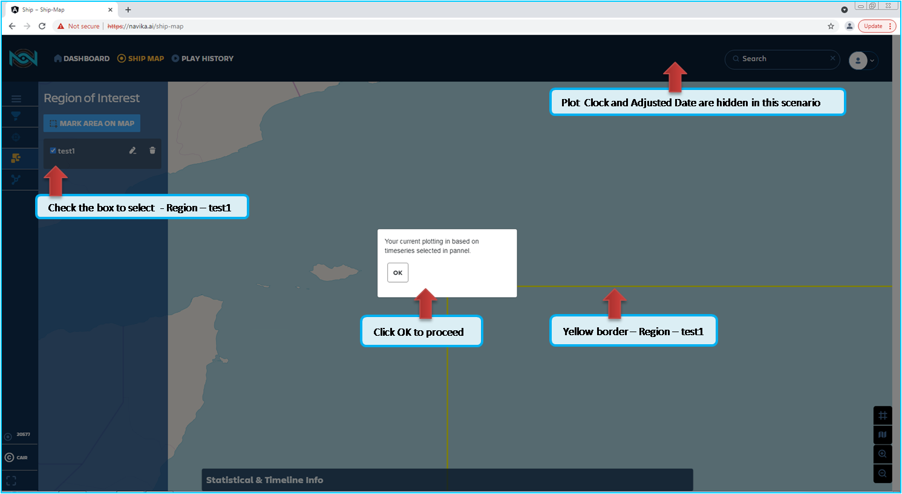Fig. 138 Region plotting ontime series¶
sub-types are not listed in this documentation.
If you do not select any ship or ships in the panel, by default it will be selected all the categories of ships. Graphically displayed all the available data for each category.
In the Fig. 138, you can set the year range, as indicated in the Slider. In the figure indicated the region you selected. Click OK on the pop-up to continue to process the data based on the slider we have set to 2018 to 2021 by using the slider. You can observe the Region selected has the option and features available in Global Search, Mouse hover over the Ship Icon to display the Tool tips which has the basic ship details with DTG. Even you left click over the ship icon the pop-up menu will be displayed. So the details of the particular ship/vessel are diplayed.
Also be noted that you can click one at a time, multiple selection of the ship is not implemented in this application
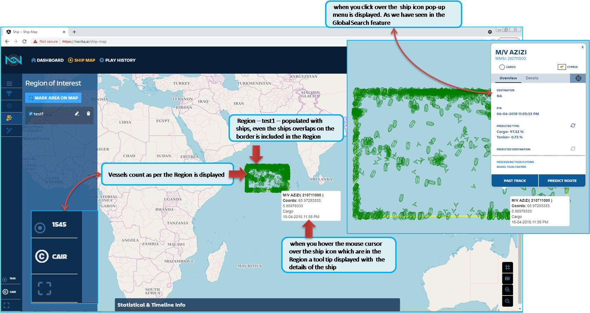Fig. 139 Region-plotting-vesselCount-pop-up Menu¶
Later in the section will show you how to set the Time series.
In the Fig. 140 indicates once you checked the box - Region it defined earlier, Yellow rectangular box appear. In the Navigation Bar Adjusted clock and Plot clock and other features are hidden except Search Function. Even Search Function is active in the Region of Interest.
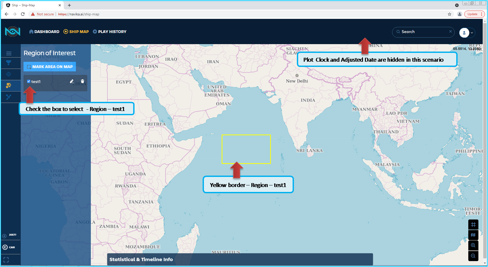Fig. 140 Selected Region display indication¶
In the Fig. 141 Statistical and Timeline Info panel with all the ships/vessels are selected. you view the Ship type Cargo is listed on the top in alphabetically ordered.
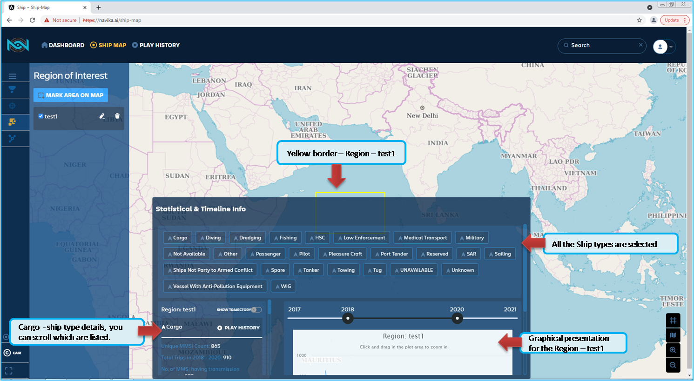Fig. 141 Indication of Statistical info¶
in continuation of the above figure, in the Fig. 142 shows the number of ships as per the time series, are provided the details of the MMSI in the categorywise, that is Cargo the details are
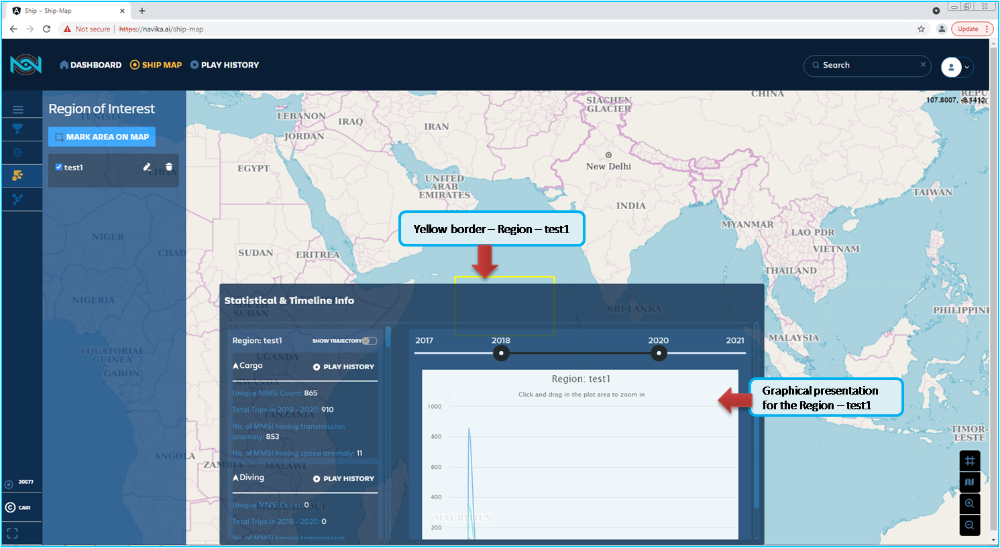Fig. 142 ROI-Region-display-indication-Statistical-info-Graph¶
Unique MMSI count: 865
Total trips in 2018 - 2020: 910 (you can observe in the Fig. 143 to change the time series as per your requirement. In this Documentation we have used 2018 - 2020)
No. of MMSI having transmission anomaly: 853
No. of MMSI having Speed anomaly: 11
Play history is not active in panel
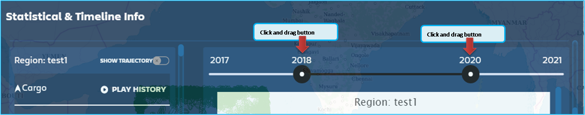Fig. 143 ROI-Region-Time-series-slider¶
In the Fig. 144 indicated with ships/vessels are plotted within the region - test1 in this case. Also you can observe that all the feature like click to see the ships details and predicated type and you can add to Individual Ships that is Ships of Interest(SOI) and to Ship Group. Search funtion is also active.
Fig. 144 ROI-Region-display-indication-ship-populated¶
In the Fig. 145 indicate the Graph for the Cargo in pop-up window with details as Cargo 858, which is Uniqe MMSI count. Also with DTG details as Sunday April 1, 18:30, it is for the Month of April 2018.
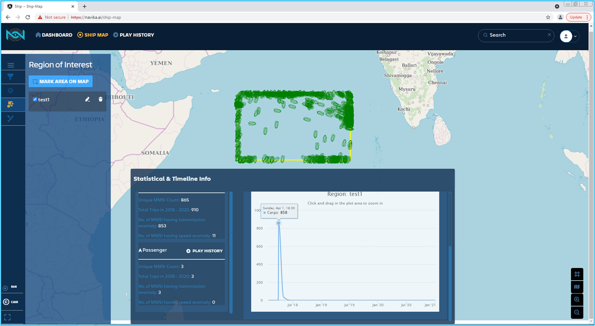Fig. 145 Display-indication-ship-populated-Graph¶
The Region of Interest is also compatible with any map you have selected, in the Fig. 146 if you select the Satellite map, seamlessly changes the map, without any data loss.
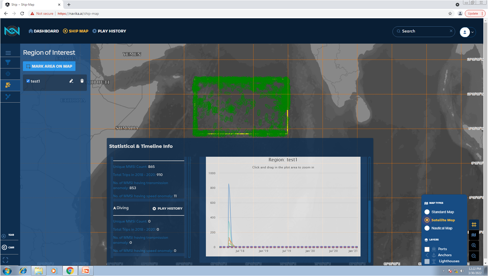Fig. 146 ROI-Region-display-in Satellite map¶
Ship icon, color, and shape are displayed on the Live Map is dependant on the vessel’s type and status.
In the Fig. 147 shows few ships icons used in this documentation for you, normal icon is indicated for in transit and round Icon when vessel is in stationary or anchored
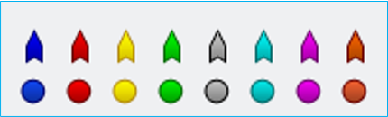Fig. 147 Ship icons types¶